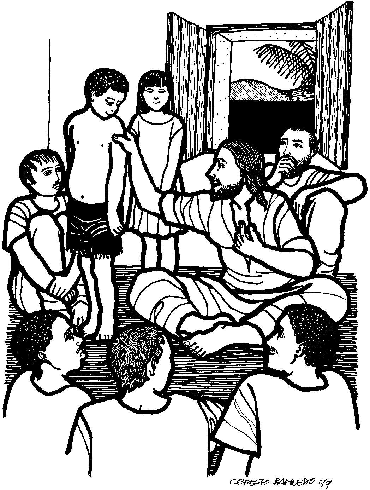

This week's lessons: Proverbs 31:10-31 and Psalm 1, or [Wisdom of Solomon 1:16-2:1, 2:12-22 or Jeremiah 11:18-20] and Psalm 54, James 3:13 - 4:3, 7-8a, Mark 9:30-37
Elementary
School Pew-work
Unscramble
the bold words:
Jesus and his ssdlepcii_____________ went to his home in Capernaum. After they were inside the house, essuJ__________ asked them, "What were you arguing about along the way?" They had been gguinar__________ about which one of them was the greatest, and so they did not answer. After Jesus sat down and told the eelvtw__________ disciples to gather around him, he said, "If you want the place of honour, you must become a slave and serve others!" Then Jesus had a dclhi __________ stand near him. He put his arm around the child and said, "When you eelcomw__________ even a child because of me, you welcome me. And when you welcome me, uoy _________ welcome the one who sent me.
 |
1. Where were Jesus and the disciples? ____________________________________________________________________________ 2. What had the disciples been arguing about? ____________________________________________________________________________ 3. What did Jesus say to them? ____________________________________________________________________________ 4. What did Jesus say about children? ____________________________________________________________________________ |
Next Week:Esther 7:1-6, 9-10; 9:20-22 and Psalm 124 or Numbers 11:4-6, 10-16, 24-29 and Psalm 19:7-14, James 5:13-20, Mark 9:38-50